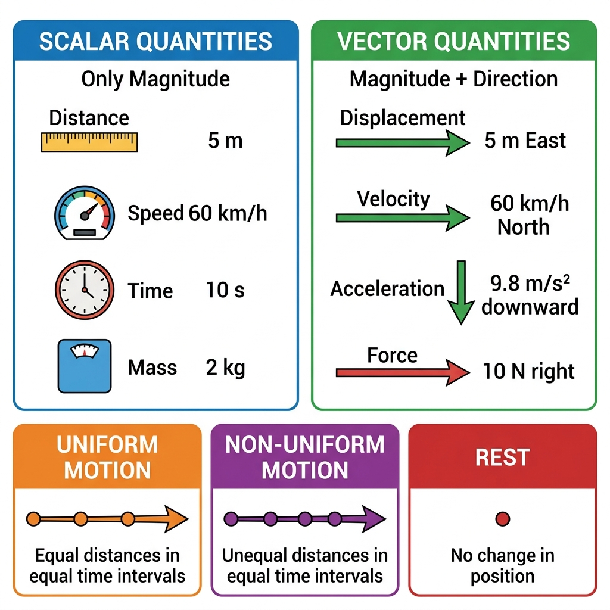
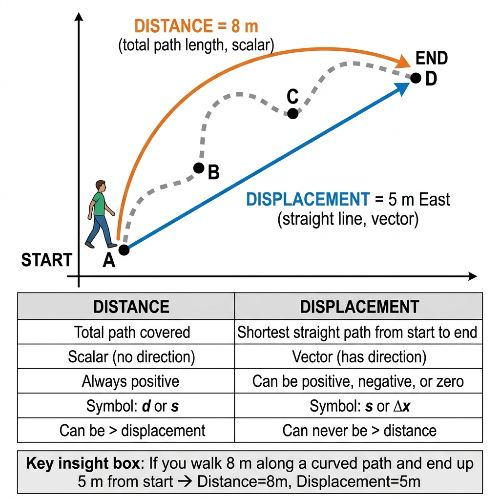
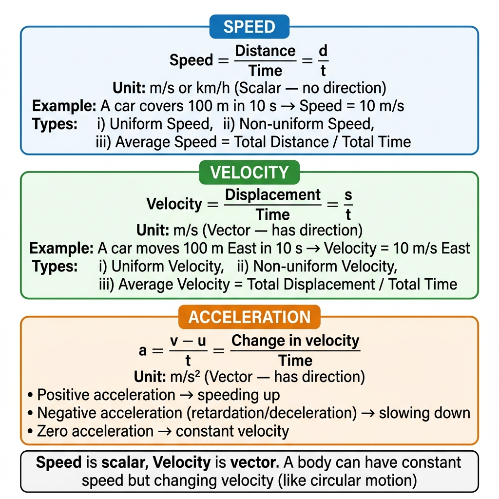
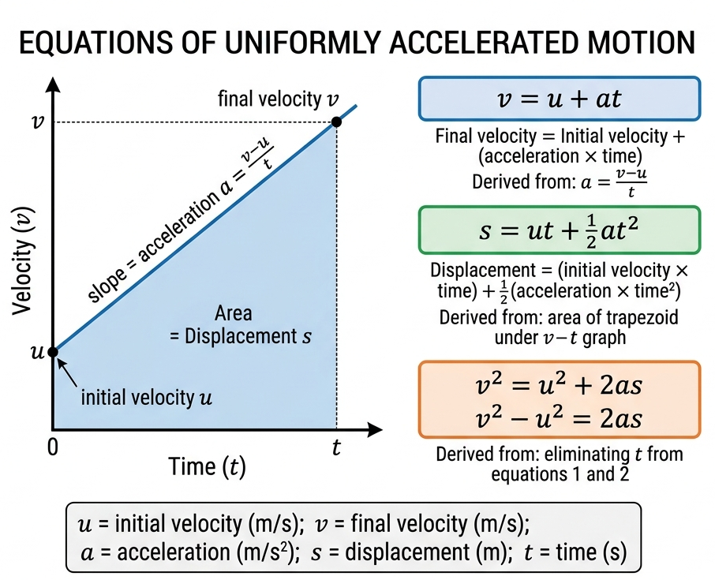

ICSE Class 9 Physics • Comprehensive Chapter Notes
🌐 vardaanlearning.com📞 9508841336
Chapter 2: Motion in One Dimension
ICSE Class 9 Physics — Complete Notes for School Exams | Reference: S. Chand Concise Physics by R.K. Bansal
📖 To the Student: Motion is the foundation of Physics. From a rolling ball to a falling raindrop — everything that moves follows the principles in this chapter. Understanding motion in a straight line (one dimension) will prepare you for all of kinematics. Focus on the definitions, the three equations of motion, and the interpretation of graphs. These are guaranteed exam topics!
1. Rest and Motion
Core Definitions
A body is said to be in motion if it changes its position with respect to its surroundings (a reference point) as time passes.
A body is said to be at rest if it does not change its position with respect to its surroundings as time passes.
Key Concept: Motion and Rest are RelativeRest and motion are relative concepts — a body may be at rest with respect to one observer and in motion with respect to another.
Example: A passenger sitting in a moving train is:
At rest relative to another passenger sitting beside them (same reference).
In motion relative to a person standing on the platform.
∴ There is no absolute rest or absolute motion.
Types of Motion
Type
Description
Example
Translatory / Linear
Body moves along a path (straight or curved) without rotating
Car on road, falling stone
Rectilinear
Special case — motion along a straight line only
Freely falling ball, train on track
Circular
Body moves along a circular path
Earth around the Sun, fan blades
Oscillatory / Vibratory
Body moves back and forth about a fixed mean position
Pendulum, guitar string
Random
Irregular, unpredictable movement
Dust particles in air, Brownian motion
Uniform vs. Non-Uniform Motion
Uniform vs Non-UniformUniform Motion: Equal distances are covered in equal intervals of time (however small). Speed is constant.
Non-Uniform Motion: Unequal distances are covered in equal intervals of time. Speed keeps changing.

Fig. 1 — Scalar quantities have only magnitude; vector quantities have both magnitude and direction. Motion can be uniform, non-uniform, or rest.
2. Scalar and Vector Quantities
Scalar Quantities
Quantities described by magnitude (size) alone, with no direction. Examples: Distance, Speed, Time, Mass, Temperature, Energy, Work, Power.
Vector Quantities
Quantities that have both magnitude AND direction. Represented by arrows. Examples: Displacement, Velocity, Acceleration, Force, Momentum, Weight.
Scalar
Corresponding Vector
Distance ($d$)
Displacement ($s$)
Speed ($v$)
Velocity ($\vec{v}$)
Mass ($m$)
Weight ($W = mg$, downward)
Energy (J)
Force ($\vec{F}$)
—
Acceleration ($\vec{a}$)
3. Distance and Displacement

Fig. 2 — Distance is the total path length (scalar); displacement is the shortest straight-line path from start to finish (vector).
DistanceDistance is the total length of path actually travelled by a body, regardless of direction.
Symbol: $d$ or $s$ | SI Unit: metre (m)
Type: Scalar — always positive or zero
DisplacementDisplacement is the shortest straight-line distance from the initial position to the final position, along with its direction.
Symbol: $s$ or $\Delta x$ | SI Unit: metre (m)
Type: Vector — can be positive, negative, or zero
Key Differences: Distance vs. Displacement
Point
Distance
Displacement
Nature
Scalar
Vector
Defined as
Total path length
Shortest path from start to end + direction
Value
Always ≥ 0
Can be +, −, or 0
Comparison
Distance ≥ Displacement
Displacement ≤ Distance
When equal?
When body moves in a straight line without turning back
When displacement = 0?
When body returns to its starting point (e.g., full circular trip)
Example 1 ICSEQ: A boy walks 4 m East, then 3 m North. Find his (a) distance, (b) displacement.
(a) Distance = total path = 4 + 3 = 7 m (b) Displacement = shortest path = $\sqrt{4^2 + 3^2} = \sqrt{16+9} = \sqrt{25} = $ 5 m (in the North-East direction)
Note: Displacement (5 m) < Distance (7 m) ✓
🧠 Memory Trick
Think of it like GPS vs. an odometer:
• Odometer (car dashboard) → counts every twist and turn = Distance
• GPS → shows direct point-to-point = Displacement
A body completing one full lap of a track: Distance = circumference, Displacement = 0.
4. Speed and Velocity

Fig. 3 — Speed is scalar (how fast), velocity is vector (how fast + which direction), acceleration measures the rate of change of velocity.
Speed
Speed — Definition & FormulaSpeed is defined as the distance travelled per unit time.
$$\text{Speed} = \frac{\text{Distance}}{\text{Time}} \implies v = \frac{d}{t}$$
SI Unit: metre per second (m/s) | Type: Scalar
Conversion: 1 km/h = $\dfrac{5}{18}$ m/s 1 m/s = $\dfrac{18}{5}$ km/h = 3.6 km/h
Velocity — Definition & FormulaVelocity is defined as the displacement per unit time.
$$\text{Velocity} = \frac{\text{Displacement}}{\text{Time}} \implies v = \frac{s}{t}$$
SI Unit: m/s (with direction) | Type: Vector
Average Velocity $= \dfrac{\text{Total Displacement}}{\text{Total Time}}$
For uniform acceleration: $v_{avg} = \dfrac{u + v}{2}$
Speed vs. Velocity — Critical Differences
Comparison Table
Speed
Velocity
Scalar
Vector
= Distance / Time
= Displacement / Time
Always ≥ 0
Can be +, −, or 0
Never negative
Can be negative (means opposite direction)
Speed ≥ |Velocity|
|Velocity| ≤ Speed
Key Insight: A car going around a circular track at 60 km/h has constant speed but continuously changing velocity (because direction changes).
Example 2 NumericalICSEQ: A car travels 150 km in 3 hours. Find its average speed in (a) km/h, (b) m/s.
(a) Average speed $= \dfrac{150}{3} = $ 50 km/h (b) In m/s: $50 \times \dfrac{5}{18} = \dfrac{250}{18} \approx $ 13.9 m/s
Example 3 — Tricky Average Speed ImportantQ: A man covers the first half of his journey at 40 km/h and the second half at 60 km/h. Find his average speed for the whole journey.
Warning: Average speed ≠ (40+60)/2 = 50 km/h (this is wrong!)
Let total distance = $2d$ km.
$t_1 = \dfrac{d}{40}$ h $t_2 = \dfrac{d}{60}$ h Total time $= \dfrac{d}{40}+\dfrac{d}{60} = \dfrac{3d+2d}{120} = \dfrac{5d}{120} = \dfrac{d}{24}$
Average speed $= \dfrac{2d}{d/24} = 2d \times \dfrac{24}{d} = $ 48 km/h
5. Acceleration and Retardation
Acceleration — Definition & FormulaAcceleration is the rate of change of velocity, i.e., change in velocity per unit time.
$$a = \frac{v - u}{t} = \frac{\text{Final velocity} - \text{Initial velocity}}{\text{Time taken}}$$
Uniform vs Non-Uniform AccelerationUniform Acceleration: Velocity changes by equal amounts in equal time intervals. Acceleration is constant. Example: Freely falling body — accelerates at $g = 9.8$ m/s² constantly.
Non-Uniform Acceleration: Velocity changes by unequal amounts in equal time intervals. Example: A car in heavy city traffic.
Example 4 NumericalQ: A car starts from rest and reaches 72 km/h in 10 seconds. Find its acceleration.
Example 5 — Retardation NumericalQ: A train moving at 90 km/h comes to rest in 30 seconds. Find its retardation.
$u = 90 \times \dfrac{5}{18} = 25$ m/s, $v = 0$, $t = 30$ s
$a = \dfrac{0-25}{30} = -0.83$ m/s² Retardation = 0.83 m/s² (retardation is always expressed as a positive value)
6. Equations of Motion (Uniform Acceleration)

Fig. 4 — All three equations of motion are derived from the v-t graph. The slope gives acceleration; the shaded area gives displacement.
Variables Used
$u$ = initial velocity (m/s) | $v$ = final velocity (m/s) | $a$ = acceleration (m/s²) | $s$ = displacement (m) | $t$ = time (s)
First Equation: $v = u + at$
Derivation
By definition of acceleration:
$$a = \frac{v-u}{t} \implies at = v - u$$
$$\boxed{v = u + at}$$
Use: To find final velocity or time when acceleration is uniform.
Second Equation: $s = ut + \dfrac{1}{2}at^2$
Derivation
For uniform acceleration, average velocity $= \dfrac{u+v}{2}$
Displacement = average velocity × time:
$$s = \frac{u+v}{2} \times t$$
Substitute $v = u + at$:
$$s = \frac{u + u + at}{2} \times t = \frac{2u + at}{2} \times t$$
$$\boxed{s = ut + \frac{1}{2}at^2}$$
Use: To find displacement when time is known.
Third Equation: $v^2 = u^2 + 2as$
Derivation
From 1st equation: $t = \dfrac{v-u}{a}$. Substitute into $s = \dfrac{u+v}{2} \times t$:
$$s = \frac{u+v}{2} \times \frac{v-u}{a} = \frac{v^2 - u^2}{2a} \implies 2as = v^2 - u^2$$
$$\boxed{v^2 = u^2 + 2as}$$
Use: To find velocity or displacement when time is not given or required.
THREE EQUATIONS OF MOTION — Quick Reference
$v = u + at$ (use when time is known, find $v$)
$s = ut + \dfrac{1}{2}at^2$ (use when time is known, find $s$)
$v^2 = u^2 + 2as$ (use when time is NOT given)
🧠 Choosing the Right Equation
Time given, need velocity → $v = u + at$
Time given, need displacement → $s = ut + \frac{1}{2}at^2$
No time given/needed → $v^2 = u^2 + 2as$
Body starts from rest: $u = 0$ → equations become $v = at$, $s = \frac{1}{2}at^2$, $v^2 = 2as$
Body comes to rest: $v = 0$ → substitute and solve
Example 6 — 1st & 2nd Equations NumericalICSEQ: A bus starts from rest with uniform acceleration of 2 m/s². Find: (a) velocity after 5 s, (b) distance covered in 5 s.
Given: $u = 0$, $a = 2$ m/s², $t = 5$ s
(a) $v = u + at = 0 + 2 \times 5 = $ 10 m/s (b) $s = ut + \frac{1}{2}at^2 = 0 + \frac{1}{2} \times 2 \times 25 = $ 25 m
Example 7 — 3rd Equation NumericalImportantQ: A car travelling at 20 m/s applies brakes and decelerates at 4 m/s². Find the distance it covers before stopping.
Horizontal line → Uniform velocity (acceleration = 0)
Straight line going up → Uniform acceleration (positive slope)
Straight line going down → Uniform deceleration (negative slope)
Curved line → Non-uniform acceleration
Line touching x-axis (v = 0) → Body momentarily at rest
Calculating Displacement from v-t Graph (Area Rule)
Area = DisplacementTriangle area (body starts from rest or ends at rest): $A = \dfrac{1}{2} \times \text{base} \times \text{height}$
Rectangle area (uniform velocity): $A = \text{length} \times \text{breadth} = v \times t$
Trapezoid area (uniform acceleration with initial velocity): $A = \dfrac{1}{2}(u+v) \times t$
Feature
d-t Graph
v-t Graph
Y-axis
Distance (m)
Velocity (m/s)
Slope gives
Speed
Acceleration
Area gives
—
Displacement
Horizontal line
Rest (speed = 0)
Uniform velocity (a = 0)
Straight diagonal
Uniform speed
Uniform acceleration
Curve bending upward
Acceleration
Non-uniform acceleration (a increasing)
Example 10 — v-t Graph Full Analysis NumericalImportantQ: A v-t graph shows: velocity increases from 0 to 30 m/s in 6 s, then stays at 30 m/s for 4 s, then decreases to 0 in 3 s. Find: (a) acceleration in each phase, (b) total displacement.
$g$ is slightly greater at the poles than at the equator.
$g$ decreases as altitude increases.
Equations for Free Fall
Body dropped from rest ($u = 0$, $a = g$ downward):
$v = gt$ $h = \dfrac{1}{2}gt^2$ $v^2 = 2gh$
Body thrown vertically upward ($a = -g$, upward positive):
Max height: $H = \dfrac{u^2}{2g}$ Time to reach top: $t = \dfrac{u}{g}$ Total flight time: $T = \dfrac{2u}{g}$
Example 11 — Free Fall NumericalICSEQ: A stone is dropped from a cliff 80 m high. Find: (a) time to reach the ground, (b) velocity on impact. ($g = 10$ m/s²)
$u = 0$, $h = 80$ m, $a = g = 10$ m/s²
(a) $h = \frac{1}{2}gt^2 \implies 80 = 5t^2 \implies t^2 = 16 \implies t = $ 4 s (b) $v = gt = 10 \times 4 = $ 40 m/s Verify: $v^2 = 2gh = 2(10)(80) = 1600 \implies v = 40$ m/s ✓
Example 12 — Upward Throw NumericalImportantQ: A ball is thrown vertically upward at 29.4 m/s. Find: (a) maximum height, (b) total time of flight. ($g = 9.8$ m/s²)
$u = 29.4$ m/s, $v = 0$ at max height, $a = -9.8$ m/s²
(a) $H = \dfrac{u^2}{2g} = \dfrac{29.4^2}{2 \times 9.8} = \dfrac{864.36}{19.6} = $ 44.1 m (b) Time to top: $t = \dfrac{u}{g} = \dfrac{29.4}{9.8} = 3$ s Total flight time $= 2t = $ 6 s
10. Formula Quick Reference
Quantity
Formula
SI Unit
Type
Speed
$v = d/t$
m/s
Scalar
Average Speed
Total distance / Total time
m/s
Scalar
Velocity
$v = s/t$
m/s
Vector
Acceleration
$a = (v-u)/t$
m/s²
Vector
1st Equation
$v = u + at$
—
—
2nd Equation
$s = ut + \frac{1}{2}at^2$
—
—
3rd Equation
$v^2 = u^2 + 2as$
—
—
Free fall height
$h = \frac{1}{2}gt^2$ (if $u=0$)
m
—
Max height (thrown up)
$H = u^2/(2g)$
m
—
Total flight time
$T = 2u/g$
s
—
Unit conversion
1 km/h = 5/18 m/s | 1 m/s = 18/5 km/h
—
—
11. Practice Problems — All Types
Type A: Conceptual Questions
Q1 — Conceptual ICSEQ: Can a body have (a) zero velocity but non-zero acceleration? (b) constant speed but changing velocity?
(a) Yes. A ball thrown vertically upward has $v = 0$ at its highest point, yet still has downward acceleration $g = 9.8$ m/s² (gravity does not switch off at the peak).
(b) Yes. A body moving in a circular path with constant speed — the magnitude of velocity (speed) stays constant, but the direction changes continuously, so velocity changes.
Q2 — Distance vs Displacement ICSEQ: A person walks 3 km East, then 4 km North. Find the distance and displacement.
Distance = 3 + 4 = 7 km Displacement = $\sqrt{3^2 + 4^2} = \sqrt{9+16} = \sqrt{25} = $ 5 km in the North-East direction (at 53.1° from East)
Type B: Speed and Velocity Problems
Q3 NumericalQ: A cyclist rides 300 m in 60 s, rests for 30 s, then rides back 300 m in 90 s. Find: (a) average speed, (b) average velocity.
Total distance $= 600$ m, Total time $= 180$ s, Net displacement $= 0$ (a) Average speed $= 600/180 = $ 3.33 m/s (b) Average velocity $= 0/180 = $ 0 m/s (returns to start)
Q4 — Train Problem NumericalQ: A train 200 m long passes a pole in 10 s. How long will it take to pass a bridge 800 m long?
Speed $= \dfrac{200}{10} = 20$ m/s
Distance to pass bridge $= 200 + 800 = 1000$ m
Time $= \dfrac{1000}{20} = $ 50 s
Type C: Equations of Motion
Q5 — Distance in nth Second NumericalImportantQ: A car starts from rest with acceleration 3 m/s². Find the distance covered in the 5th second. Formula: $s_n = u + \dfrac{a}{2}(2n-1)$
Q6 — Two cars ICSEQ: Two cars start from rest. Car A has acceleration 4 m/s²; Car B has 2 m/s². After how many seconds will A be 100 m ahead of B?
After time $t$: $s_A = \frac{1}{2}(4)t^2 = 2t^2$ $s_B = \frac{1}{2}(2)t^2 = t^2$
$s_A - s_B = t^2 = 100 \implies t = $ 10 s
Type D: Graph Problems
Q7 — v-t Graph Reading ICSEQ: A v-t graph: velocity rises from 0 to 20 m/s in 5 s, stays at 20 m/s for 3 s, then falls to 0 in 2 s. Find (a) accelerations, (b) total distance.
Q9 — Classic ICSE ICSEImportantQ: A body thrown up takes 4 s to return to the starting point. Find: (a) initial velocity, (b) maximum height. ($g = 10$ m/s²)
Time to reach top $= 4/2 = 2$ s. At top, $v = 0$: (a) $0 = u - 10(2) \implies u = $ 20 m/s (b) $H = u^2/(2g) = 400/20 = $ 20 m
Type F: Mixed Problems
Q10 — Two towns meeting ICSEQ: Towns A and B are 600 km apart. A car leaves A at 60 km/h and a bus leaves B at 90 km/h simultaneously, heading toward each other. When and where do they meet?
Relative closing speed $= 60 + 90 = 150$ km/h
Time to meet $= \dfrac{600}{150} = $ 4 hours
Distance from A $= 60 \times 4 = $ 240 km from A (360 km from B)
12. Common Mistakes & Exam Tips
⚠️ Common Mistakes to Avoid1. Confusing speed (scalar) with velocity (vector) — speed has no direction. 2. Confusing distance and displacement — a body returning to start: distance > 0, displacement = 0. 3. Not converting km/h → m/s before using equations (multiply by 5/18). 4. Using $a = +g$ for a body thrown upward — should be $a = -g$ (gravity opposes upward motion). 5. For "comes to rest," setting $u = 0$ instead of $v = 0$. 6. Thinking average speed $= \dfrac{v_1+v_2}{2}$ always — only valid when time at each speed is equal, not distance. 7. Confusing slope rules: slope of d-t = speed; slope of v-t = acceleration. 8. In free fall, thinking heavier objects fall faster — ALL objects fall at the same $g$.
🎯 Exam Strategy for ICSE
Definitions (1–2 marks): Write exact definition + formula + SI unit.
Numericals: Always write: Given → Find → Formula → Substitution → Answer with unit.
Graph questions: Identify slope (acceleration) and area (displacement) correctly — appear every year.
Derivations (4–5 marks): Know all 3 equations of motion — step-by-step derivation.
Convert units first: Always convert to SI before substituting into formulas.
Sign convention: Choose one direction as positive. If upward = +, then downward displacement is −.
$g$ value: Use $g = 9.8$ m/s² unless question explicitly says to use 10 m/s².
High-value topics: Equations of motion, v-t graph, d-t graph, free fall — guarantee 70% of marks.